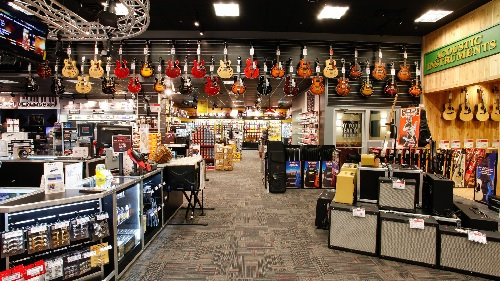

Qui sommes-nous ?
La magasin Guitar Online a ouvert ses portes le 25 septembre 2007 sous la direction de M.Sanchez, à Lyon.
Il s'est developpé au fil des années, formant aujourd'hui une grande équipe de professionnel.
Toute notre équipe est á votre disposition, que ce soit en magasin, ou en ligne afin de vous conseiller dans vos achats.
Notre site web offre une large gamme de guitare, exportant même á l'international.
Nos clients partagent régulièrement des avis très positifs sur notre enseigne.
Consultez leurs avis, et n'hésitez pas á laisser le votre ! Les retours de nos clients sont toujours essentiels pour vous assurer la meilleure expérience possible.

Guitar Online Shop - Lyon / Gerland
247 rue Marcel Merieux
69007 LYON
Métro Stade de Gerland (Ligne B)
Bus 32 et 96
Horaires d'ouverture
du mardi au samedi
de 10h00 à 12h45
de 14h00 à 19h00